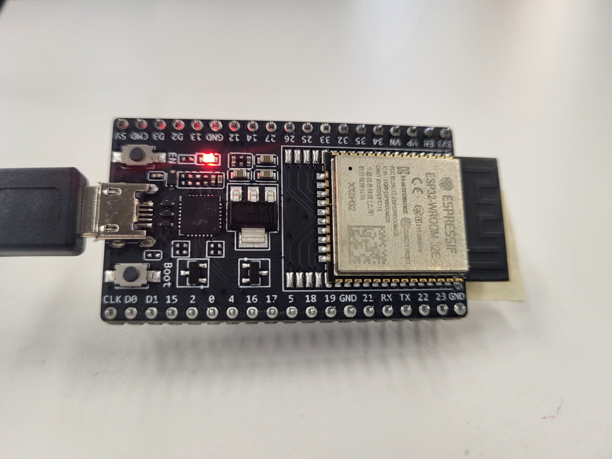

<br>
#### Week 9: Wifi/Bluetooth/IOT
<br>
This week, I tried to make two ESP32s communicate. So many things went wrong and we never actually got it working, but not without significant struggle!
Our original goal was to scrape a cat fact from the cat facts API and display that on the screen connected to Allison's ESP32 when a button was pressed. However, the cat facts API required authentication, so we switched to a random facts API with no required authentication instead.
We were set to have one ESP32 send a signal to the other, which would activate a screen to display a random fact.
We 3D printed a model of a cat to go with it, which was supposed to be holding the button, but we didn't end up being able to hook it up to the circuit in time. Anna also got injured and couldn't come in to work on that part with us, so we didn't end up attaching it.
First, we realized there was an issue with sharing strings between them (We came to realize that they couldn't share strings over a certain character length, I think it was around 9 characters).
Then we went from sharing strings to just sharing numbers, scraping the temperature from the weather API on the course website. And even still we couldn't do that. After troubleshooting on my end to scrape the correct number (current temperature in Fahrenheit in Boston), it sent successfully to Allison's, but Allison's ESP just read out 0's.
<h5>ESP32 Setup</h5>
Using code from a [RandomNerd tutorial](https://randomnerdtutorials.com/esp-now-two-way-communication-esp32/) as a template, I coded up a script that sends a signal to Allison's ESP 32.
<br>

<br>
This code went through several iterations, but here was the final version. See Allison's website for her ESP's code.
<br>
<h5>ESP32-NOW Code</h5>
<pre><code class="language-arduino">
#include <esp_now.h>
#include <WiFi.h>
#include <HTTPClient.h>
#include <ArduinoJson.h>
#include <Wire.h>
#include <Adafruit_GFX.h>
#include <Adafruit_SSD1306.h>
const int buttonPin = 18;
int buttonState = 0;
const char* ssid = "MAKERSPACE";
const char* password = "12345678";
// REPLACE WITH THE MAC Address of your receiver
uint8_t broadcastAddress[] = {0xEC, 0x62, 0x60, 0x91, 0x94, 0xA8}; //Allison's ESP address
const String endpoint = "https://api.weather.gov/gridpoints/BOX/76,74/forecast";
String OGcatfact = "Cats have 9 lives.";
float temperature;
// Define variables to store fact to be sent
String pushagain = "Push button for more facts!";
// This ESP is only sending to Allison's ESP, not receiving anything back
// Variable to store if sending data was successful
String success;
String catFact;
//Structure example to send data
//Must match the receiver structure
typedef struct struct_message {
// String catfact;
// String pushagain;
float temp;
} struct_message;
// Create a struct_message to hold message with new fact
struct_message incomingReadings;
esp_now_peer_info_t peerInfo;
// Callback when data is sent
void OnDataSent(const uint8_t *mac_addr, esp_now_send_status_t status) {
Serial.print("\r\nLast Packet Send Status:\t");
Serial.println(status == ESP_NOW_SEND_SUCCESS ? "Delivery Success" : "Delivery Fail");
if (status ==0){
success = "Delivery Success :)";
}
else{
success = "Delivery Fail :(";
}
}
void setup() {
Serial.begin(115200);
WiFi.begin(ssid, password);
while (WiFi.status() != WL_CONNECTED) {
delay(1000);
Serial.println("Connecting to WiFi..");
}
Serial.println("Connected to the WiFi network");
// Set device as a Wi-Fi Station
WiFi.mode(WIFI_STA);
//Initialize button pin
pinMode(buttonPin, INPUT);
// Init ESP-NOW
if (esp_now_init() != ESP_OK) {
Serial.println("Error initializing ESP-NOW");
return;
}
// Once ESPNow is successfully Init, we will register for Send CB to
// get the status of Transmitted packet
esp_now_register_send_cb(OnDataSent);
// Register peer
memset(&peerInfo, 0, sizeof(peerInfo));
memcpy(peerInfo.peer_addr, broadcastAddress, 6);
peerInfo.channel = 0;
peerInfo.encrypt = false;
// Add peer
if (esp_now_add_peer(&peerInfo) != ESP_OK){
Serial.println("Failed to add peer");
return;
}
}
void loop() {
//Read button state
buttonState = digitalRead(buttonPin);
if ((WiFi.status() == WL_CONNECTED)) { //Check the current connection status
Serial.println("connected to Wifi");
HTTPClient http;
http.begin(endpoint); //Specify the URL
int httpCode = http.GET(); //Make the request
if (httpCode > 0) { //Check for the returning code
String payload = http.getString();
Serial.println(httpCode);
DynamicJsonDocument doc(10000); // Create a buffer of 10000 bytes
// Deserialize the JSON document
DeserializationError error = deserializeJson(doc, payload);
// Test if parsing succeeds.
if (error) {
Serial.print(F("deserializeJson() failed: "));
Serial.println(error.c_str());
return;
}
const int temp = doc["properties"]["periods"][0]["temperature"];
incomingReadings.temp = temp;
// Navigate through JSON document, extracting some values
Serial.println("All I care about is the current weather, which is ");
Serial.println(temp);
}
http.end(); //Free the resources
}
delay(1000);
// Send message via ESP-NOW
if (buttonState == HIGH) {
Serial.println("button pressed ");
esp_err_t result = esp_now_send(broadcastAddress, (uint8_t *) &incomingReadings, sizeof(incomingReadings));
if (result == ESP_OK) {
Serial.println("Sent with success");
//Serial.println(pushagain);
Serial.println(incomingReadings.temp);
}
else {
Serial.println("Error sending the data");
Serial.println(incomingReadings.temp);
}
}
else {
Serial.println("off");
}
delay(1000);
}
</code></pre>
<br>
<h5>Takeaways</h5>
We revisited this project several times in the following weeks of the class. We never ended up being able to successfully communicate the correct scraped value from one ESP32 to the other. We were the only group doing an ESP Now based project this week, so we couldn't troubleshoot with any other groups.
We tried several different strategies to troubleshoot, including simpliying code over and over again. We went from sending a structured message with multiple elements to a structured message with one element to just a fixed int. I think we were able to send and receive signals when they were just fixed ints and floats, but for some reason, we couldn't get the weather number (which was variable and scraped from an API) to go through. We even tried switching out ESPs.
After 10+ hours of troubleshooting during class and labs, we ditched it and worked on our final projects. Allison had a screen working and everything (wired up too), but it didn't get used much since we had so many issues receiving the signal on her ESP 32.
All in all, I was able to write code that successfully scraped a value from an API and sent it to another ESP, but we weren't able to properly receive and display it on the other ESP. And I struggled a lot. Woohoo!
Click [here](../index.html) to return to the homepage.